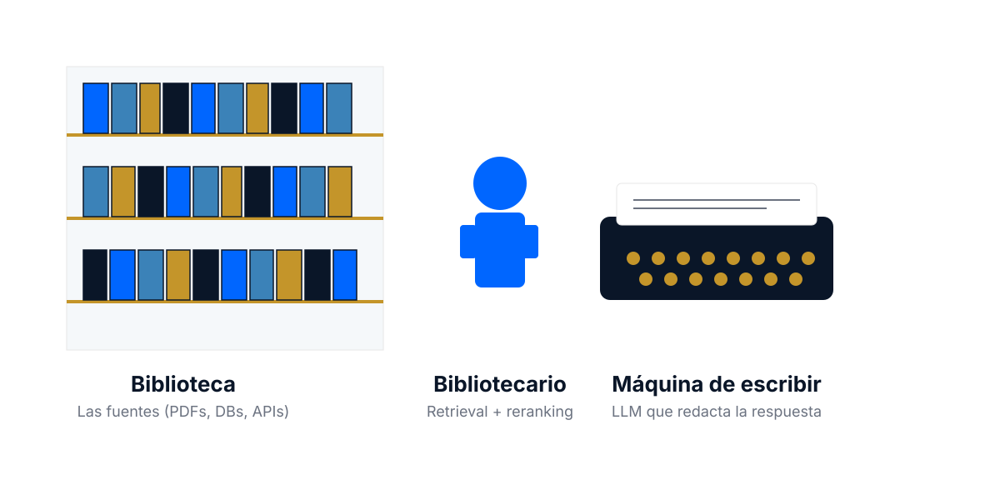
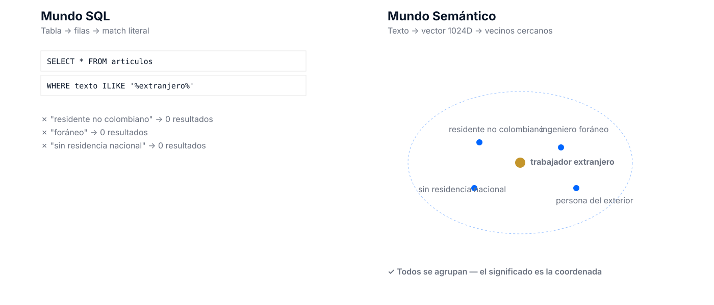
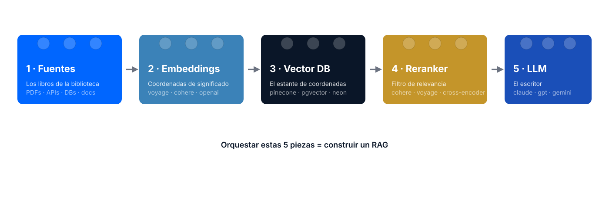
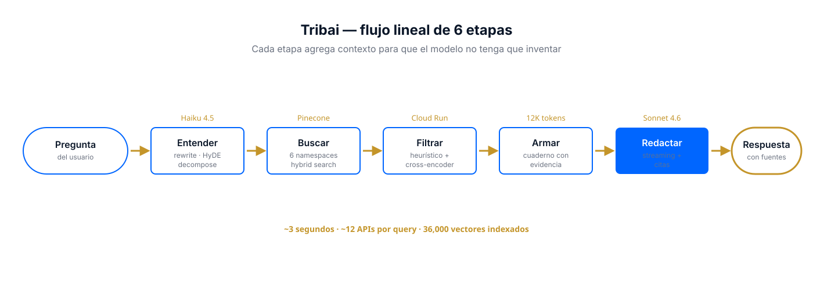
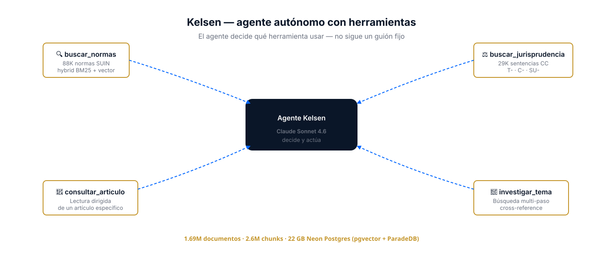
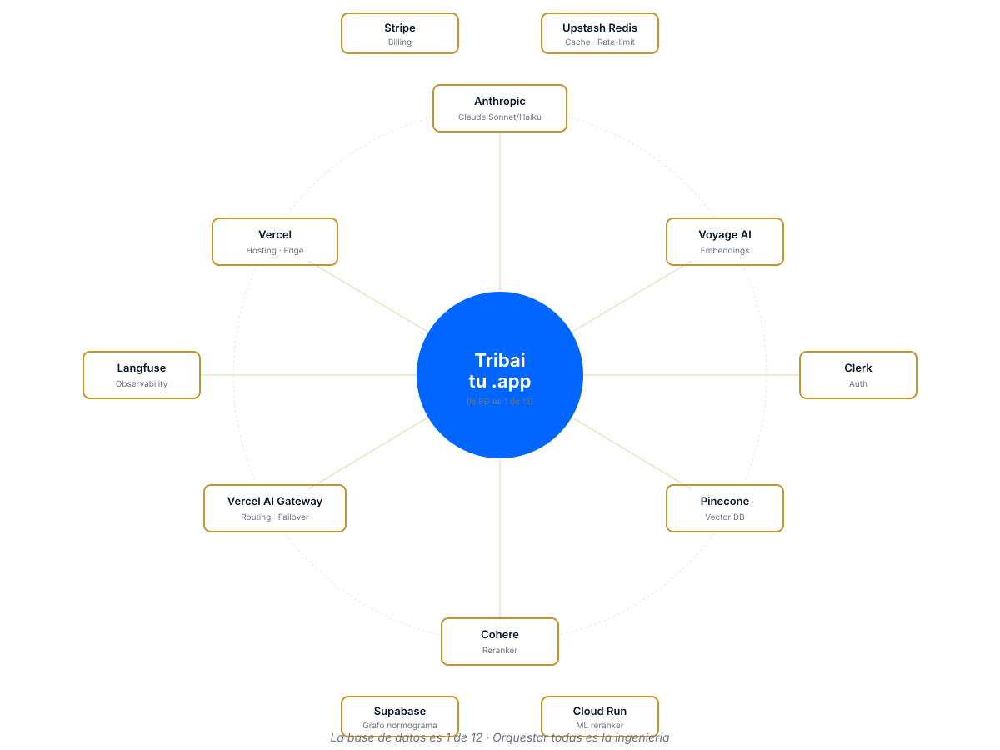
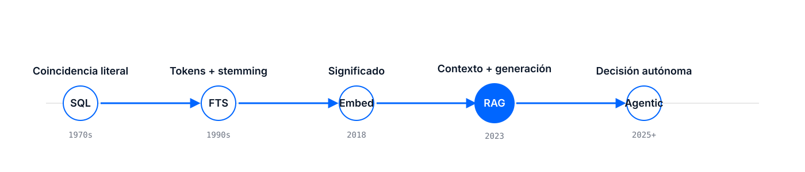

RAG en producción
Un paseo por dos sistemas reales: Tribai + Kelsen
Pregunta real de un contador
"Una empresa colombiana paga honorarios a un ingeniero residente en España por un diseño mecánico. ¿Qué retención en la fuente aplica y qué artículos del ET la soportan?"
→ ChatGPT sin contexto esto lo inventa.
→ Google no sabe qué es "residente".
→ Veamos qué hace Tribai.
Una pregunta para ustedes
¿Alguna vez le preguntaron algo técnico a ChatGPT, respondió muy seguro…
y cuando lo revisaron con calma, estaba mal?
Un artículo inventado. Un año que no existe. Una fórmula que no cuadra.
A todos nos ha pasado.
Los próximos 90 minutos van a ser sobre por qué pasa eso — y sobre la técnica que lo resuelve.
Lo que les enseñan en el curso
-- la app consulta la BD
SELECT articulo, texto
FROM estatuto_tributario
WHERE texto ILIKE '%retención%'
AND estado = 'vigente'
ORDER BY articulo;
La app conversa con la base de datos.
La BD retorna filas. La app las muestra.
Funciona muy bien si la pregunta es literal.
¿Qué pasa si no lo es?
Lo que hace una app moderna
La app conversa con la persona, consultando muchas fuentes a la vez.
- → No una tabla, sino decenas
- → No coincidencia literal, sino significado
- → No filas, sino una respuesta redactada con citas
Una pregunta de contador real
"Estoy haciendo la declaración de una empresa que le pagó honorarios a un profesional residente en España. ¿Qué retención aplico?"
Con SQL sobre el ET
SELECT articulo, texto
FROM estatuto_tributario
WHERE texto ILIKE '%retención%extranjero%';Resultado: 0 filas. El Art. 408 no dice "extranjero". Dice "residente en el exterior".
✗ SQL no ve que son sinónimos.
Con RAG sobre el ET
- Embeddings agrupan "extranjero" ≈ "residente en el exterior" ≈ "no domiciliado"
- Retrieval trae los 5 artículos que tocan el tema: 406-417 del ET
- El LLM redacta: "Aplica Art. 408 del ET, tarifa del 20%…"
✓ Responde con fuentes verificables.
El problema ya no es cómo responder
Es qué darle de contexto
Los modelos de lenguaje ya saben escribir bien. El trabajo del ingeniero pasó de "cómo genero texto" a "cómo le paso exactamente los datos correctos para que no invente".
7 ejemplos reales — busquen el suyo
Regla: cualquier dominio con mucho texto + preguntas humanas es candidato.
Tribai
4 horas de búsqueda manual → 10 segundos con citas al ET
Kelsen
1.7M documentos colombianos recorridos en ~3 segundos
Intercom / Zendesk AI
La documentación de la empresa como fuente, 24/7
Casos por dominio
Due diligence
80 h → 2 h revisando contratos
Protocolos clínicos
Literatura médica + historia del paciente
Onboarding corporativo
La wiki interna viva y conversacional
E-commerce
Búsqueda conversacional de catálogos
Tribai — tributario

Lo que hace
- Indexa los 1,301 artículos del Estatuto Tributario
- + 15K conceptos DIAN
- + 175 sentencias Corte Constitucional
- + DUR 1625, resoluciones, leyes
36,000 vectores · 6 namespaces
Camila me escribió un domingo
"Cris, hola. Soy Camila, contadora en Pereira. Llevo 3 semanas usando Tribai. Mañana entrego la declaración de un cliente que viene fastidiado desde el 2022 porque nadie le ha explicado por qué tuvo que pagar tanto."
"Con Tribai encontré en 20 minutos lo que no había encontrado yo en dos años. Mañana le voy a explicar con las citas exactas del ET por qué pagó de más y cómo lo vamos a corregir con una solicitud de devolución."
"Gracias. Seriamente."
Camila no es "una usuaria más". Es una profesional que recupera dinero para un cliente real.
El RAG no le hizo el trabajo — le devolvió el tiempo para pensar.
Esa frase, "me devolvió el tiempo para pensar", la hemos oído 50 veces.
Cuando construyan lo suyo, pregúntense: ¿a quién le devuelven el tiempo?
Kelsen — legal

Escala del corpus colombiano
- 1,690,083 documentos
- 2,601,419 chunks vectorizados
- 22 GB en Neon Postgres
- SUIN + Corte Constitucional + CE SAMAI + DIAN + más
Para los 410K abogados de Colombia.
Todos tienen la misma forma
📚 Mucho texto
Documentos, PDFs, APIs con contenido largo
❓ Preguntas humanas
Ambiguas, contextuales, cambiantes
⚖️ Respuestas verificables
El usuario necesita saber de dónde salió
Piensen en su dominio
Por 30 segundos, cada uno en su cabeza:
- ¿En qué industria les interesaría trabajar?
- ¿Qué documentos largos existen allí?
- ¿Qué pregunta frustrante tendría un profesional de ese campo?
Ese es un RAG posible. Guarden la idea — volveremos a ella al final.
Imaginen un bibliotecario con máquina de escribir

1 · Las fuentes = los libros
Todo texto del que el sistema puede aprender.
- PDFs escaneados (Docling, LlamaParse)
- Páginas web (scrapers)
- Bases de datos relacionales
- APIs externas (SUIN, datos.gov.co)
- Archivos Markdown, CSVs, JSONs
- 1,294 artículos del ET (estatuto.co)
- 15,495 conceptos DIAN
- 175 sentencias Corte Constitucional
- DUR 1625/2016 — 2,793 artículos
- 626 resoluciones DIAN
El 80% del trabajo no es el modelo — es la cocina
RAG con fuentes crudas
- PDFs escaneados sin OCR → texto sucio
- Artículo partido en medio de una frase
- Sin metadata de fecha / vigencia
- Referencias cruzadas ("ver Art. 107") sin resolver
- Tablas convertidas en texto plano ilegible
Resultado: el LLM cita texto roto. Las respuestas suenan confiadas pero son basura.
RAG con fuentes curadas
- OCR limpio + validación humana en muestra
- Chunking por estructura legal (artículo, parágrafo)
- Metadata:
vigente | derogado | modificado, año, libro - Cross-references extraídas como edges de grafo
- Tablas preservadas como JSON estructurado
Resultado: el LLM recibe evidencia estructurada. Responde con cirugía.
Lección incómoda: cuando alguien dice "le metimos RAG al producto", pregúntenle cómo chunkearon y qué metadata agregaron. Ahí está el producto real.
2 · Embeddings = coordenadas de significado
Un embedding es una lista de números.
Palabras parecidas producen números parecidos.
No es magia — es geometría. Cada texto se convierte en un punto en un espacio de ~1000 dimensiones.
"trabajador extranjero"
→ [0.12, -0.34, 0.88, ..., 0.07] (1024 números)

¿"trabajador extranjero" y "residente no colombiano" son parecidos?
Input 1: trabajador extranjero
Input 2: residente no colombiano
Comparen: "trabajador extranjero" vs "deducción por arrendamiento" da solo 0.35.
PostgreSQL con LIKE no ve ninguna diferencia entre los dos casos.
3 · Vector DB = el estante de coordenadas
Donde guardamos millones de embeddings y buscamos los más cercanos rápido.
No es una BD tradicional. Usa HNSW o IVF: estructuras optimizadas para "dame los 100 puntos más cercanos a este" en milisegundos sobre millones.
Opciones populares
| Pinecone | SaaS, free tier |
| pgvector | Postgres extension |
| Neon | Postgres serverless |
| Supabase | Postgres + auth |
| LanceDB | Embedded, rápido |
Tribai usa Pinecone. Kelsen usa Neon (pgvector + ParadeDB).
¿Cómo se ordena un estante "por significado"?
Buscar en SQL
WHERE texto ILIKE '%perro%'
• "el perro ladra"
• "perro policía"
NO encuentra:
✗ "mi canino"
✗ "la mascota"
✗ "lobo doméstico"
Buscar en vector DB
ORDER BY embedding <=> query_emb LIMIT 10
✓ "el perro ladra" (0.91)
✓ "mi canino" (0.78)
✓ "la mascota" (0.64)
✓ "lobo doméstico" (0.58)
~ "un animal grande" (0.41)
✗ "un carro rojo" (0.12)
El estante no ordena por letra, ordena por significado. Los sinónimos quedan juntos automáticamente.
4 · Reranker = el segundo filtro
El vector DB te da 50 candidatos en 10 ms. El reranker escoge los 5-10 mejores con un modelo más pesado (pero más preciso).
- Cohere Rerank 3.5 / 4.0
- Voyage Reranker
- Cross-encoder open source (mDeBERTa)
El bibliotecario baja 20 libros del estante (retrieval rápido).
Los ojea uno por uno y te entrega los 3 que mejor responden tu pregunta (rerank preciso).
Lo que cambia el reranker
Query del contador: "¿retención a residentes en el exterior?"
Top-5 del vector DB (rápido)
Ordenado por cercanía en embeddings
- Art. 407 — Retenciones diversas 0.82
- Art. 300 — Ganancias ocasionales 0.79
- Art. 415 — Retención sobre arrendamientos 0.77
- Art. 408 — Pagos al exterior 0.76
- Art. 125 — Deducciones por donaciones 0.74
✗ Art. 408 (el correcto) está en la posición #4.
Tres resultados irrelevantes están arriba.
Top-5 después de rerank (preciso)
Reordenado por un modelo que "lee" cada candidato
- Art. 408 — Pagos al exterior 0.94
- Art. 415 — Arrendamientos al exterior 0.71
- Art. 406 — Casos en que se debe retener 0.68
- Art. 417 — Agentes de retención 0.62
- Art. 407 — Retenciones diversas 0.54
✓ Art. 408 escaló a posición #1.
Los 5 resultados ahora son relevantes.
Costo: 120 ms extra. Ganancia: el LLM recibe el contexto correcto, no ruido.
5 · LLM = el escritor
Recibe tu pregunta + los 5 fragmentos seleccionados + instrucciones.
Redacta la respuesta citando las fuentes.
No inventa. No "recuerda de entrenamiento". Solo reorganiza lo que le pasaste.
Qué usan Tribai y Kelsen
- Claude Sonnet 4.6 — generación principal
- Claude Haiku 4.5 — routing/barato
- Gemini 2.5 Flash — fallback bulk
El modelo correcto para cada tarea, no el más caro para todo.
Así se le habla al LLM
Esto es literalmente lo que Tribai le pasa al modelo en cada pregunta:
Sos un asistente tributario colombiano experto.
REGLAS ESTRICTAS:
1. Responde ÚNICAMENTE con base en el <context> que te paso.
2. Cita cada afirmación con el artículo del ET entre corchetes: [Art. 408].
3. Si la respuesta NO está en el contexto, di: "No tengo evidencia suficiente".
4. Nunca inventes números, fechas ni artículos que no estén en el contexto.
<context>
<article id="Art. 408">
Los pagos o abonos en cuenta por concepto de... (texto completo)
</article>
<article id="Art. 415">...</article>
...
</context>
PREGUNTA DEL USUARIO:
¿Qué retención aplica a un pago a un residente en España por honorarios?El "secret sauce" no es el modelo — es el contrato. Las reglas 3 y 4 son las que evitan las alucinaciones.
La misma pregunta · dos respuestas
ChatGPT / Claude sin contexto
"En Colombia, a los pagos por honorarios a residentes en el exterior se les aplica una retención del 33% sobre el valor bruto, conforme al Art. 415 del Estatuto Tributario…"
✗ La tarifa correcta es 20%, no 33%.
✗ El artículo correcto es el 408, no el 415.
✗ Suena muy seguro. Es un invento plausible.
Claude con contexto de 5 artículos
"Aplica retención del 20% sobre el valor bruto del pago por honorarios técnicos, según el Art. 408 del ET. Si existe convenio de doble imposición con España, puede reducirse; consultar Concepto DIAN 12345/2022."
✓ Tarifa correcta (20%).
✓ Artículo correcto (408).
✓ Cita verificable. Incluye el matiz del convenio.
Alucina vs. cita. Esa diferencia es el trabajo del ingeniero de RAG.
Las 5 piezas juntas

Orquestar estas 5 piezas = construir un RAG.
El cómo las conectas es donde está la creatividad.
Tribai — pipeline lineal

Sigamos una query, milisegundo por milisegundo
Juan, contador en Cali, escribe su pregunta y presiona Enter. Son 2,780 milisegundos. Esto es lo que pasa:
tribai.co/api/chat.
Edge runtime
Juan ve la primera palabra en su pantalla aproximadamente al segundo 1. El resto llega en streaming mientras lee.
Historia real de debugging
Un contador nos escribe: "Tribai me respondió citando el IMAS, pero ese régimen fue derogado en 2019."
Qué había pasado
- Habíamos indexado el texto histórico del artículo, sin distinguir entre "vigente" y "derogado"
- Los embeddings del IMAS se parecen mucho a los de renta ordinaria (tema común)
- El LLM citó el IMAS sin saber que ya no aplica
- Metadata: cada chunk ahora tiene
estado: vigente | derogado - Penalización: el reranker resta 0.30 a los chunks derogados
- Prompt: "si citas algo derogado, márcalo explícitamente"
- Tests: 15 smoke tests nuevos cubriendo regímenes históricos
Al cabo de 3 días se desplegó el fix. El contador volvió a escribir: "ahora sí."
Construir RAG es iterar con feedback real. No "hay un bug": hay una evolución del contexto.
Autopsia — volvamos al cold open
Qué voy a mostrar
- Misma query del cold open
- Panel de evidencia abierto
- Los 5 artículos que citó
- Confidence level (alto/medio/bajo)
Insight: el cuaderno está abierto. Nada se inventa.
Kelsen — agente con herramientas

Kelsen — misma receta, arquitectura distinta
"¿Qué ha dicho la Corte Constitucional sobre el mínimo vital en pensiones?"
Observen cómo Kelsen invoca buscar_jurisprudencia y recorre 29,000 sentencias antes de responder.
Dos arquitecturas, misma ecuación
Tribai — Pipeline
- Flujo lineal fijo de 6 etapas
- Cada query pasa por las mismas etapas
- Latencia predecible (~3s)
- Más simple de debuggear
Ideal cuando el dominio es estable.
Kelsen — Agente
- Agente decide qué hacer en cada turno
- Puede llamar 0, 1 o N tools
- Latencia variable (1-15s)
- Razonamiento multi-paso emergente
Ideal cuando las preguntas son abiertas.
La BD es 1 de 12 servicios

Qué hace cada uno
🤖 Anthropic
Claude Sonnet (calidad) y Haiku (barato)
🧭 Voyage AI
Embeddings optimizados para texto largo
📍 Pinecone
Vector DB SaaS, 36K vectores
🔎 Cohere
Reranker preciso
🚪 Vercel AI Gateway
Routing entre proveedores, failover
☁️ Vercel
Hosting + Edge + Blob
🔭 Langfuse
Observability de LLM calls
🔐 Clerk
Autenticación
💳 Stripe
Billing de planes
⚡ Upstash Redis
Cache + rate limit
🐘 Supabase
Grafo de normograma (pgvector)
🧠 Cloud Run
ML models self-hosted
Costo real por query
por conversación inicial
con prompt caching + query router
Desglose aproximado
| Claude Sonnet (respuesta) | $0.020 |
| Claude Haiku (routing/rewrite) | $0.003 |
| Pinecone query | $0.004 |
| Cohere rerank | $0.002 |
| Voyage embedding | $0.002 |
¿A dónde va cada centavo de un query de $0.013?
Imaginen que Juan en Cali acaba de preguntar. 1.3 centavos de dólar se acaban de gastar. Los rastreamos:
Anthropic Sonnet — redacta la respuesta final (~4K tokens de salida)
Anthropic Haiku — rewrite + HyDE + routing
Cohere Rerank — reordena 60 candidatos → 15
Pinecone — busca en 36K vectores
Voyage — embeddings de la query y sub-queries
65% se va en LLMs (Sonnet + Haiku). Por eso el mayor ahorro está en caching y en elegir el modelo correcto.
Para construir el suyo este mes necesitan:
| Pieza | Opción gratuita | Opción pro |
|---|---|---|
| LLM | Anthropic $5 crédito + Gemini / Groq free | Claude Sonnet, GPT-5 |
| Embeddings | Voyage free (200M tok/mes) · Cohere free | voyage-3-large |
| Vector DB | Supabase (pgvector) | Pinecone, Neon |
| Framework | Next.js / FastAPI | + Vercel AI SDK v6 |
| Deploy | Vercel hobby | Vercel Pro |
| Observability | Langfuse cloud free | Datadog, LangSmith |
Todo lo anterior cabe en $0. Esta noche pueden tener un RAG corriendo.
Receta mínima — ~60 líneas
// 1. Conexión a Postgres con pgvector
const db = postgres(process.env.DATABASE_URL!);
// 2. Función de ingestión (corres una vez por doc)
async function ingest(doc: string) {
const chunks = splitIntoChunks(doc, 512);
for (const chunk of chunks) {
const [embedding] = await voyage.embed([chunk]);
await db`INSERT INTO docs (text, embedding)
VALUES (${chunk}, ${embedding})`;
}
}
// 3. Función de búsqueda
async function search(query: string, k = 5) {
const [qEmbed] = await voyage.embed([query]);
return await db`
SELECT text, 1 - (embedding <=> ${qEmbed}) as similarity
FROM docs
ORDER BY embedding <=> ${qEmbed}
LIMIT ${k}
`;
}
// 4. Función RAG: retrieve + generate
async function ask(question: string) {
const docs = await search(question);
const context = docs.map(d => d.text).join('\n---\n');
return await anthropic.messages.create({
model: 'claude-sonnet-4-6',
messages: [{ role: 'user', content:
`Responde usando solo este contexto. Cita fragmentos exactos.\n\n${context}\n\nPregunta: ${question}`
}]
});
}
// 5. Listo. Conectá a un endpoint HTTP y tenés un RAG.Pseudocódigo. Funciona. Cabe en una pantalla. Lo pueden escribir en 2 horas.
Por qué la observabilidad no es opcional
Lanzamos un "pequeño" cambio: subimos el top-K del retrieval de 10 a 20. "Más contexto, mejor respuesta", pensamos.
A las 4 horas, Langfuse nos muestra en el dashboard:
- latencia p95: 3.2s → 7.8s
- costo por query: $0.013 → $0.028
- calidad (LLM-as-judge): 4.2/5 → 3.8/5
El contexto extra estaba confundiendo al modelo. Más no era mejor. Rollback en 15 minutos.
Sin observabilidad, ese cambio habría vivido en producción semanas.
Nadie se habría quejado — las respuestas seguían saliendo. Solo que peor, más lentas y más caras.
El problema de RAG es silencioso: degrada sin romper.
Lo que diferencia un RAG de juguete de uno productivo
RAG de juguete (1 día)
- Una sola fuente, chunks random
- Embeddings off-the-shelf
- Top-5 literal
- Sin evaluación
- Cache ninguno
RAG productivo (3-6 meses)
- Chunking con metadata legal/semántica
- Hybrid search (BM25 + vector)
- Query rewriting, HyDE, multi-hop
- Reranker, evidence checker
- Eval framework (340 queries, CI gate)
- Observability + cost tracking
- Fallbacks, rate-limit, auth
El salto no es tecnológico — es de disciplina.
La historia del 43%
En 2025, un grupo de Stanford hizo algo simple: preguntarle a cada herramienta de IA legal 200 preguntas reales de abogados y contar cuántas respuestas eran inventadas.
Lexis+ AI
Producto dedicado, corpus legal propio, RAG bien ajustado
Westlaw AI
Otro producto dedicado, RAG pero peor calibrado
GPT-4 solo
El LLM más poderoso del mundo, sin RAG
Los autores concluyeron algo importante: la mayoría de las "alucinaciones" que encontraron NO eran del LLM. Eran fallos de retrieval: el sistema no encontraba la fuente correcta y el modelo llenaba el hueco.
Traducción para ustedes: para reducir alucinaciones, no gasten energía "haciendo el LLM más inteligente". Gasten energía mejorando el retrieval.
Fuente: Stanford HAI, "Hallucination-Free? Assessing the Reliability of Leading AI Legal Research Tools" — JELS 2025.
Harvey.ai — el caso de estudio
valoración Serie G (marzo 2026)
- $190M ARR · 100K+ abogados
- 1,300+ firmas · 60 países
- Equipo completo de OpenAI contratado 3 meses para modelo custom de case law
- Modelo custom: 97% preferencia vs base
Lo que hacen
- Assistant (chat legal)
- Vault (análisis bulk de docs)
- Knowledge (200+ fuentes legales)
- Workflow Agents (25,000+)
- Shared Spaces (colaboración)
Pricing: ~$1,000-1,200/abogado/mes, mínimo 20 asientos.
Entry point: ~$240K/año.
¿Por qué un abogado paga $1,200 al mes?
La cuenta que hace una firma grande (sin preguntarle al CFO, se hace sola):
Sin Harvey
| Costo del abogado/hora (billable) | $400 |
| Due diligence de un contrato | 80 h |
| Investigación jurisprudencial | 20 h |
| Costo interno por caso | $40,000 |
Con Harvey
| Abogado/hora | $400 |
| Due diligence (con IA) | 15 h |
| Investigación (con IA) | 5 h |
| Costo interno por caso | $8,000 |
Ahorro por caso: $32,000. Si el abogado maneja 10 casos al año: $320,000 ahorrados.
Harvey cobra $14,400/año. ROI: 22×. Por eso pagan.
La IA no se vende por "tener IA". Se vende por devolver tiempo y reducir costos. Esa es la tesis.
Agentic RAG — la siguiente capa
RAG tradicional: un retrieval fijo, una respuesta.
Agentic RAG: la IA decide cuándo buscar, cuándo escribir, cuándo pedir ayuda.
Stanford midió: +50% retrieval accuracy, -35% tiempo para queries multi-paso.
Kelsen cuando le preguntas "¿evolución de la jurisprudencia sobre X?":
1. Invoca buscar_jurisprudencia
2. Lee 10 sentencias
3. Decide: "necesito más contexto" → consultar_articulo
4. Armoniza y redacta
MCP — el USB-C de las IAs
Model Context Protocol (Anthropic, abierto).
Un estándar para que cualquier IA hable con cualquier herramienta.
Igual que USB-C unificó carga/datos, MCP unifica cómo las IAs invocan herramientas externas.
Ejemplos de MCP servers
- Filesystem (leer/escribir archivos)
- GitHub (issues, PRs, código)
- Slack (mensajes, canales)
- Google Drive, Gmail, Calendar
- Bases de datos Postgres/MySQL
- Tribai y Kelsen como servers MCP (próximo paso)
Multi-model — el equipo, no el solitario
Antes: "¿cuál es el mejor modelo?" — respuesta única.
Ahora: el modelo correcto para cada tarea.
| Tarea | Modelo | Por qué |
|---|---|---|
| Routing | Haiku 4.5 | barato + rápido |
| Generación | Sonnet 4.6 | calidad razonamiento |
| Bulk | Gemini Flash | volumen alto |
| Fallback | GPT-5 mini | redundancia |
Vercel AI Gateway permite cambiar de uno a otro con una línea de config.
Les voy a contar cómo empezó esto
Hace un par de años, mi socio Jaime — contador público, 20 años ejerciendo — me mostraba cómo pasaba sus sábados.
Abría el PDF del Estatuto Tributario. Ctrl+F. Buscaba "retención". 240 matches. Scroll.
Llamaba a un colega: "¿vos sabés si esto sigue vigente o lo derogaron?"
Abría Excel. Calculaba a mano. 4 horas después, una respuesta que podía citar.
"Esto no es un problema de Jaime. Es un problema de los 300,000 contadores de Colombia."
Harvey.ai lo resolvió en USA para los abogados corporativos y vale $11B.
Nadie lo había hecho en español colombiano para contadores. Así nació Tribai.
La ventaja de construir desde Colombia no es técnica — es que conocemos el dolor específico.
La oportunidad LATAM
Contadores
activos en Colombia, con demanda de productividad
Abogados
2ª densidad mundial per cápita
Habitantes
sin acceso a especialistas en muchos temas
Y eso es solo Colombia. LATAM tiene 650M habitantes en la misma situación.
Si fueran ustedes, yo atacaría...
🏥 Salud rural
Protocolos + historia del paciente, en regiones sin especialistas
📚 Educación
Tutor contextual por materia, basado en el pensum real
🏛️ Gobierno digital
Normativa + trámites: hay miles de decretos sin indexar
🏭 PyMEs
Asesor financiero/legal para 2M empresas sin contador propio
🌱 Agrotech
Mejores prácticas agronómicas por región, clima, cultivo
🚓 Justicia
952K tutelas/año — triage asistido para despachos judiciales
Ninguno tiene un producto dominante aún.
Lo que NO les conté
Para que no se vayan pensando que ya saben todo: esto es apenas la primera capa. Temas que simplificamos hoy y que son campos enteros:
📚 Chunking avanzado
Hay 10+ estrategias (fixed, semantic, hierarchical, propositional, contextual). La que escojan cambia la calidad por 20-30%.
🔀 Hybrid search
BM25 + vectores fusionados con RRF, SPLADE, ColBERT… mezclas de varios retrievers para robustez.
🕸️ GraphRAG
Convertir el corpus en un grafo de conceptos para queries que requieren razonamiento multi-hop.
🧪 Evaluación rigurosa
RAGAS, LegalBench-RAG, gold sets etiquetados por expertos, LLM-as-judge, CI gates — un campo entero.
🔐 Seguridad & prompt injection
Los usuarios pueden intentar "romper" el RAG con instrucciones dentro del prompt. Defenderse es un arte.
🎓 Fine-tuning
Entrenar embeddings o rerankers específicos de su dominio — lo que hizo Harvey con voyage-law-2-harvey.
Buenas noticias: nada de esto es necesario para su primer MVP. Todo esto lo aprenden después, iterando con usuarios reales.
Pero no quería que se fueran creyendo que esto termina aquí. Esto apenas empieza.
De SELECT a orquestación —
la ingeniería cambió de forma.

Gracias
Preguntas, críticas, ideas — todas bienvenidas.
Cristián Espinal
inpluxia@gmail.com